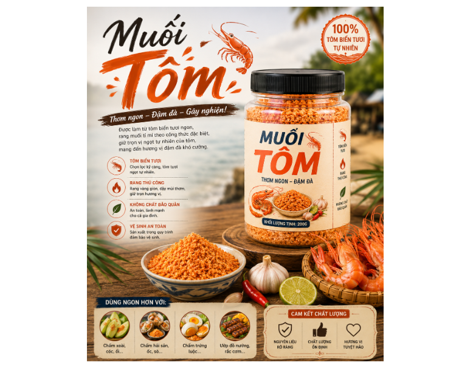

Nếu bạn đang tìm một loại gia vị vừa đậm đà, thơm ngon, vừa có thể kết hợp với nhiều món ăn quen thuộc hằng ngày, muối tôm chắc chắn là một lựa chọn đáng để thử. Với sự hòa quyện hài hòa giữa vị mặn của muối, vị ngọt tự nhiên của tôm cùng hương thơm đặc trưng của các loại gia vị, sản phẩm mang đến một hương vị hấp dẫn, gần gũi và rất dễ thưởng thức.
Điểm đặc biệt của muối tôm nằm ở sự kết hợp cân bằng giữa tôm và các loại gia vị, tạo nên màu sắc bắt mắt cùng mùi thơm đặc trưng. Từng hạt muối tôm có độ tơi vừa phải, vị đậm đà, thơm và cay nhẹ, thích hợp với khẩu vị của nhiều người. Không chỉ là một loại gia vị chấm, muối tôm còn có thể trở thành “trợ thủ” đắc lực giúp những món ăn quen thuộc trở nên hấp dẫn hơn.
Một trong những cách thưởng thức đơn giản và được yêu thích nhất chính là chấm cùng các loại trái cây. Xoài xanh, cóc, ổi, dưa leo hay những loại trái cây có vị chua, thanh mát khi kết hợp với muối tôm sẽ tạo nên sự hòa quyện giữa chua – mặn – cay – thơm vô cùng kích thích vị giác. Chỉ cần một đĩa trái cây tươi và một chút muối tôm, bạn đã có ngay món ăn vặt dân dã nhưng cực kỳ cuốn hút.

Không dừng lại ở đó, muối tôm còn phù hợp để chấm hải sản, trứng luộc, rau củ luộc, rắc lên các món ăn hoặc sử dụng làm gia vị cho một số món nướng, món trộn. Một chút muối tôm có thể giúp món ăn thêm phần đậm đà mà không cần chuẩn bị quá nhiều loại gia vị khác.
Sản phẩm được đóng gói tiện lợi, dễ bảo quản và dễ mang theo, phù hợp sử dụng trong gia đình, những buổi gặp gỡ bạn bè hay làm một món quà nhỏ mang hương vị quê nhà dành tặng người thân, bạn bè.
Muối tôm không cầu kỳ, không xa lạ, nhưng chính sự mộc mạc ấy lại tạo nên sức hấp dẫn riêng. Đó là hương vị của những nguyên liệu quen thuộc, của những món ăn dân dã và của nét ẩm thực gần gũi trong đời sống người Việt.
Muối tôm – một chút đậm đà, thêm trọn vị ngon.
Hãy thử kết hợp sản phẩm với món ăn yêu thích của bạn để cảm nhận sự khác biệt và tìm ra cách thưởng thức phù hợp nhất.
MUỐI TÔM – ĐẬM ĐÀ, THƠM NGON, GỌN TIỆN – GÓP THÊM HƯƠNG VỊ CHO MỖI BỮA ĂN.
THÔNG TIN LIÊN HỆ
THEO DÕI CHÚNG TÔI